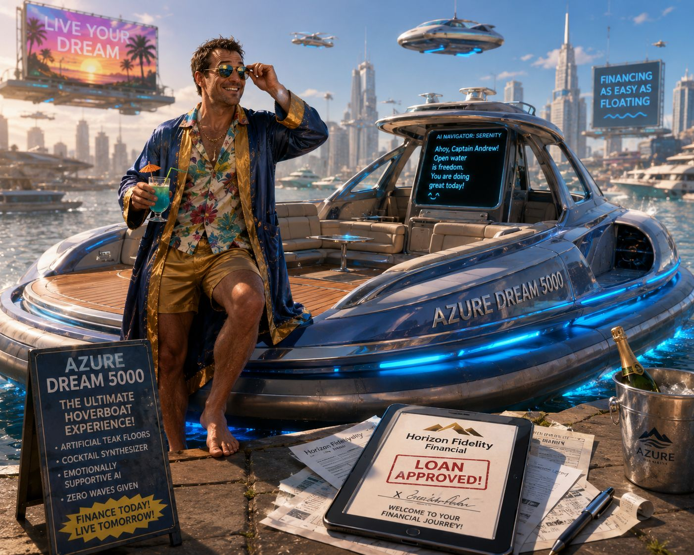
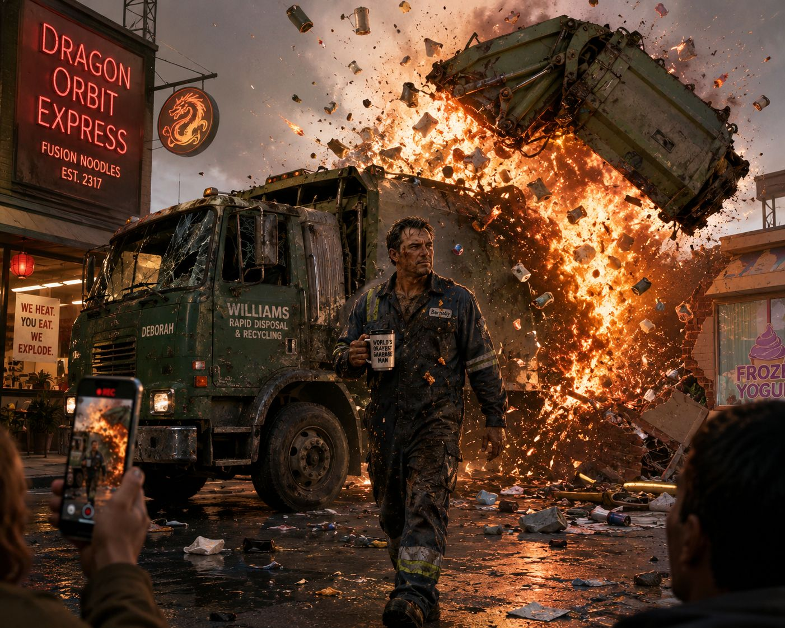

Before the Parade Passes By
On a mining colony orbiting a neutron star, a man starts singing, driving his coworker and the corporate security alignment patrols to the absolute brink.

Captain of Bad Decisions
Andrew Sternkern gets into massive debt because of a luxury hoverboat with emotionally supportive navigation, qualifying him for off-world positions on Yonkers.

The Trash Man's Inferno
Barnaby Williams compacts an improperly classified self-heating noodle canister, destroying his garbage truck, making him internet famous, and sending him to Yonkers.

First Contact
Surveyors Gideon Vale and Martin Krake land on YK-441 for the first time, arguing about future cities, capitalism, and whether kids would love a planet with a screaming sky.

Unlimited Power
Gideon proposes directly harvesting the relativistic particle jet of the dead star. Martin attempts to explain basic astrophysics and considers opening the airlock.